关于初心：在合适的光线里，慢慢生长
这个主题诞生于创作者成为父亲之后。开始更加在意时间、陪伴，以及那些会被反复翻阅的文字。我们相信，值得被记录的内容，也值得一个安静的、不随波逐流的界面。
设计理念：一天的光
Bloom 的设计灵感来自「一天的光」。两套主题在排版比例上保持绝对一致，只改变某种“光感”。
- 🌤 Bloom Petal (花瓣) —— 柔和、温润、低对比，像清晨洒入书房的第一缕阳光，适合白天阅读。
- 🌙 Bloom Petal Dark (暗夜) —— 克制、沉稳、护眼，像深夜台灯下的宁静，适合长时间专注思考。
功能亮点
⌨️ 文字优先
排版比例与层级更清晰，注意力回到文字本身。
⏳ 长期可用
低对比、低噪点，长时间阅读与写作更省眼。
🧘 情绪稳定
浅深两套基底，白天夜晚都保持舒适氛围。
🍃 细节克制
控件与装饰保持简洁，界面干净不抢内容。
全系色卡 · 人气投票
24 套主题按 12 组色系陈列。点击色卡即可实时预览整站换肤；喜欢哪组，点票数去 GitHub 给它一个 👍——每个账号一票，票数实时同步。
投票基于 GitHub Reactions，防刷票、可追溯。前往投票页 →
主题截图精选
每个色系选一张代表截图，浅色与深色交错展示。
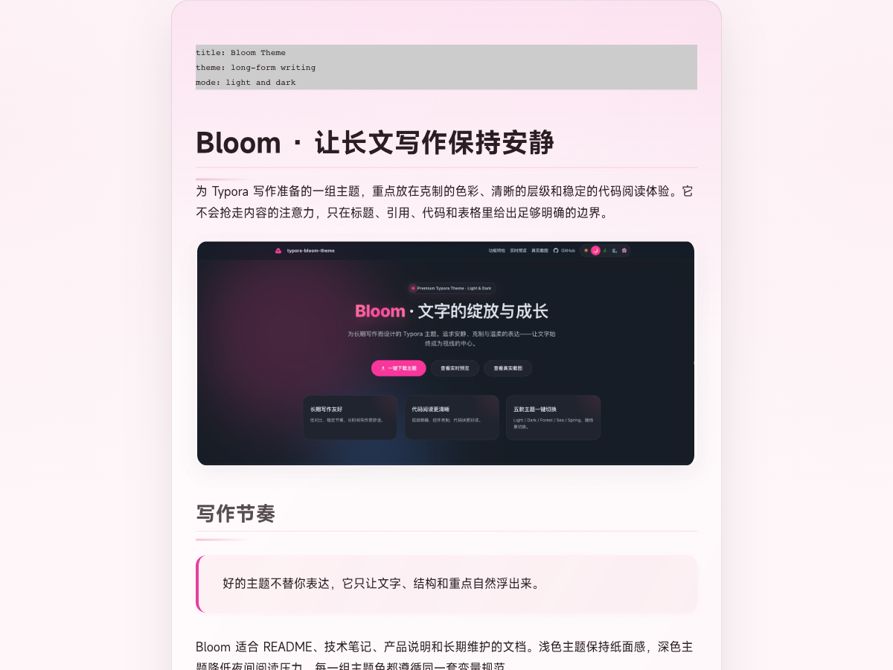
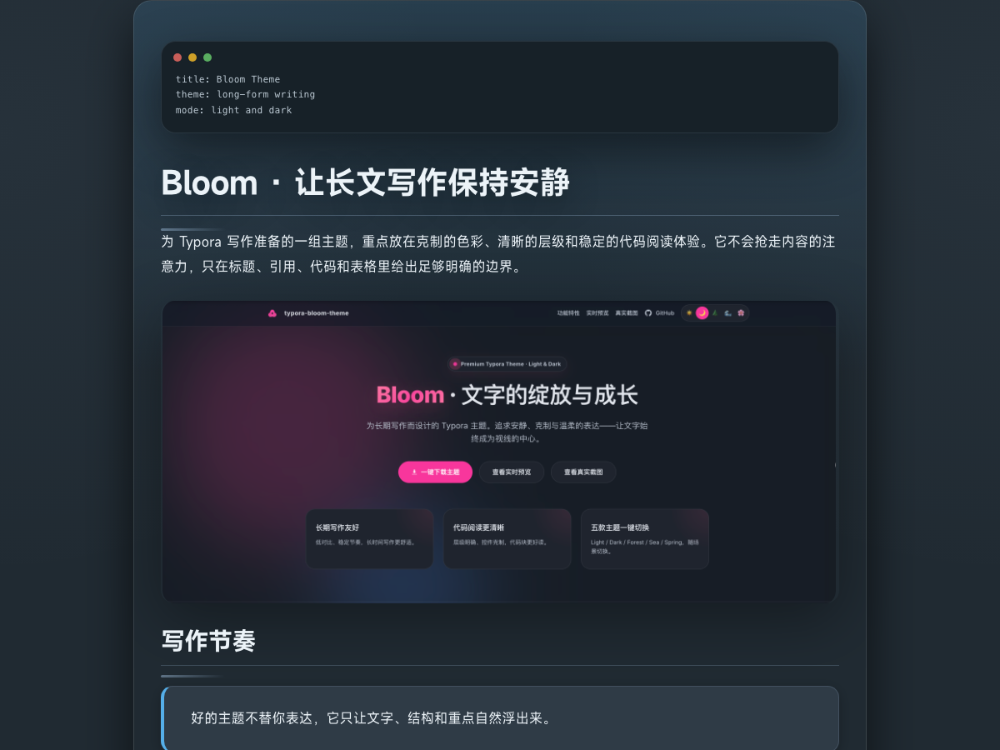
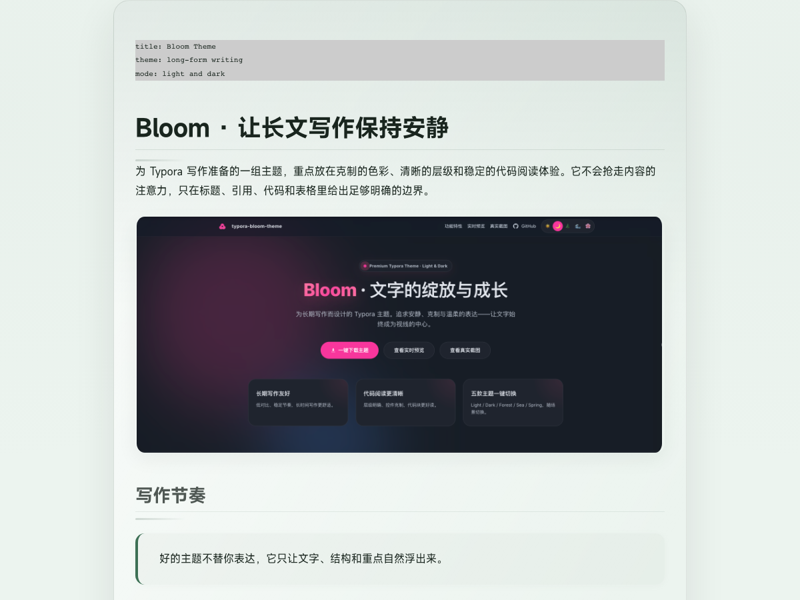
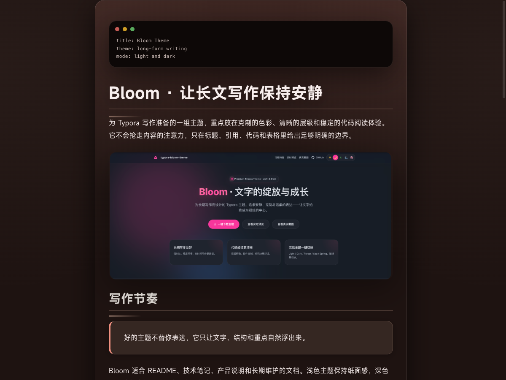
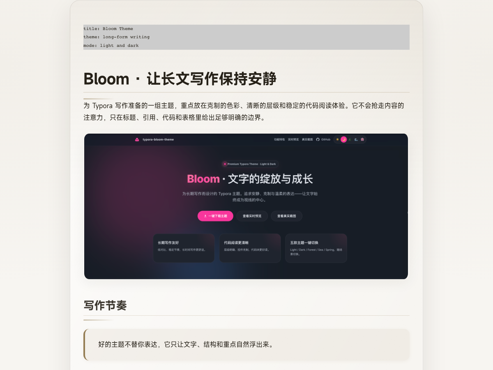
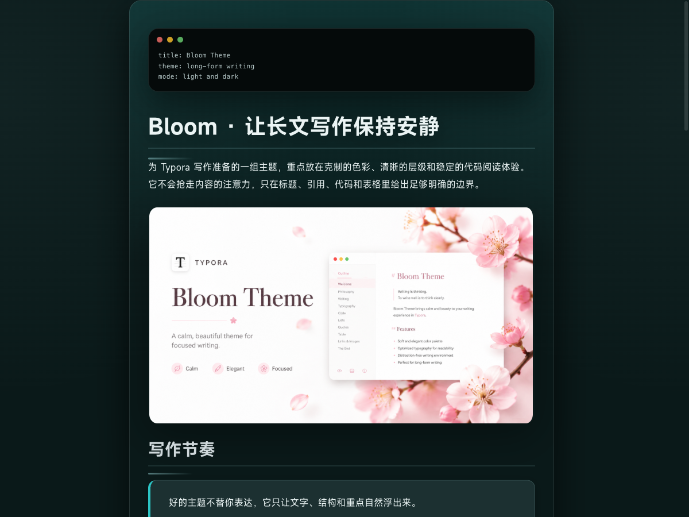
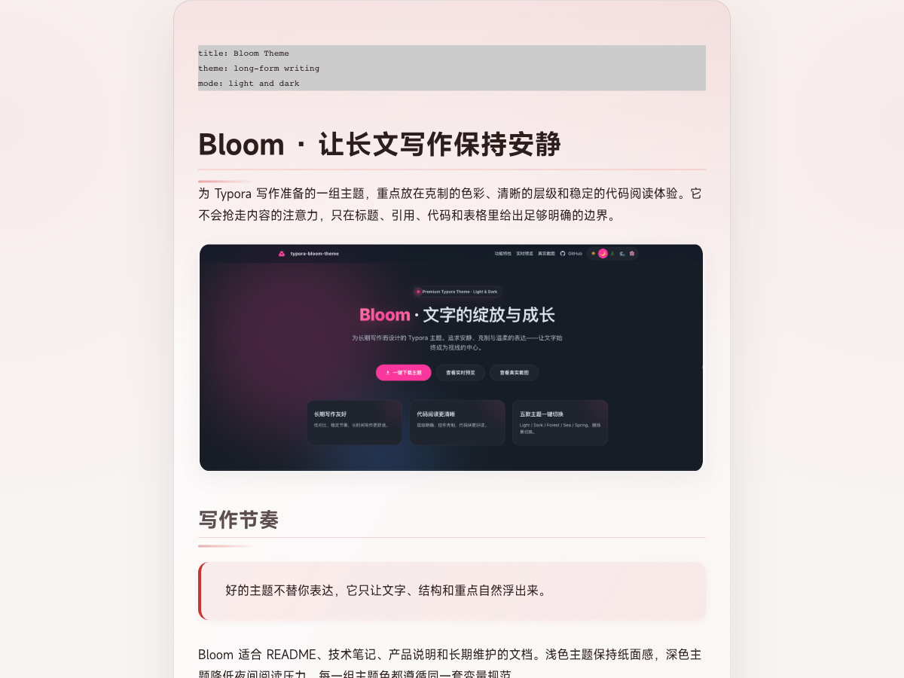
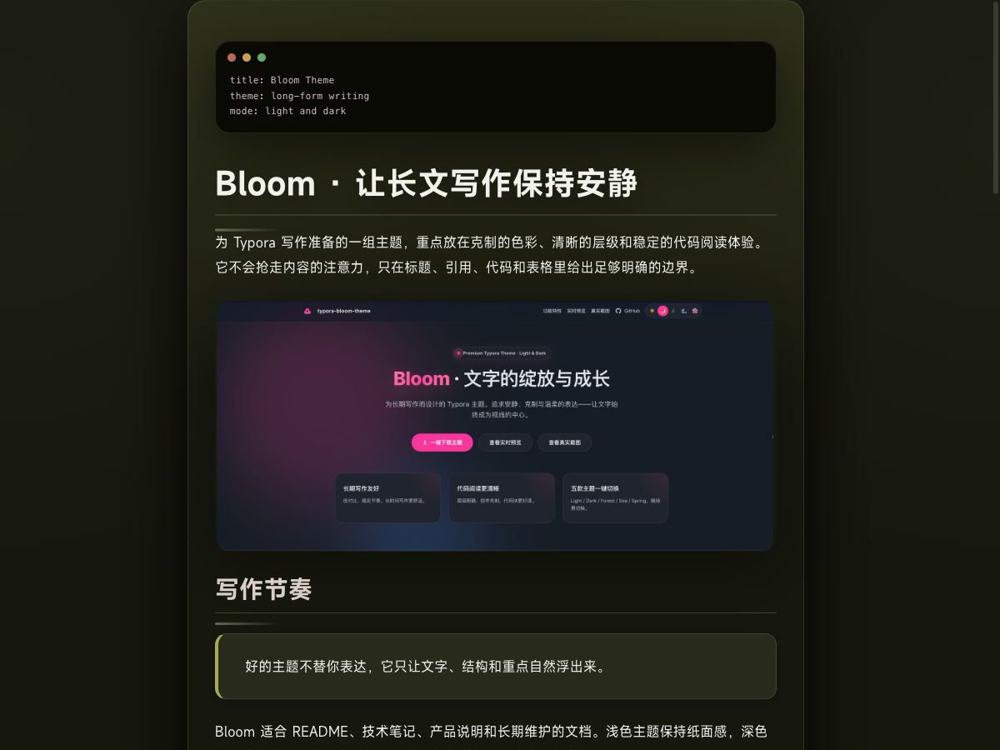
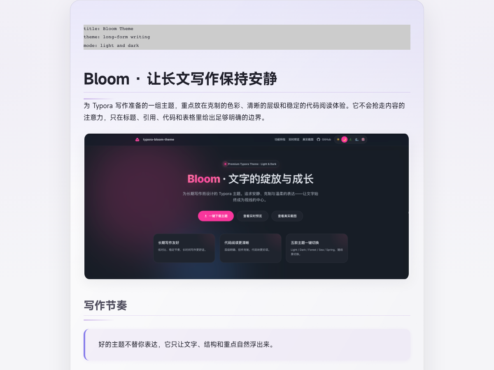
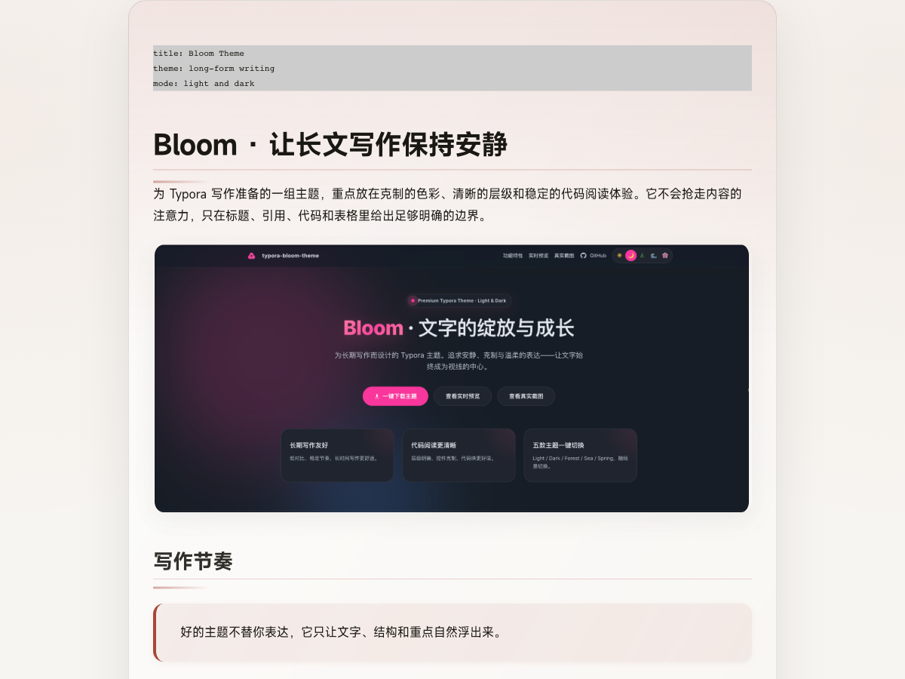
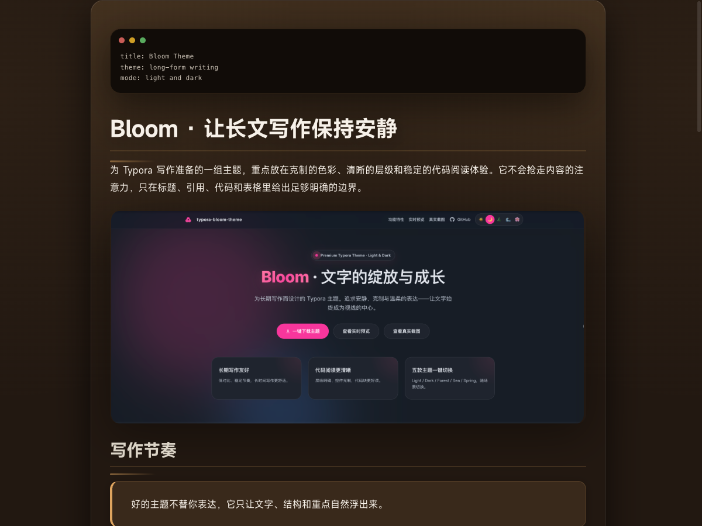
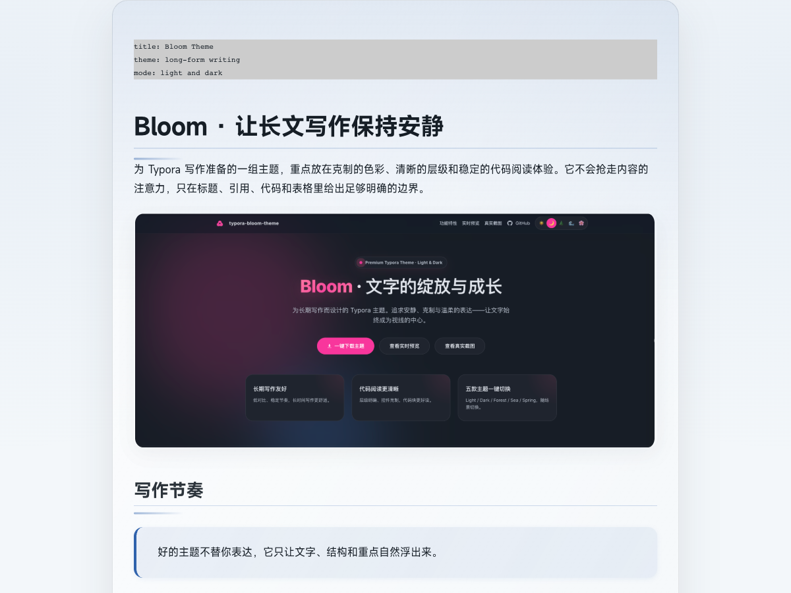
如何安装 Bloom 主题 (Installation Guide)
- 打开 Typora。
- 进入：偏好设置 → 外观 → 打开主题文件夹。
-
复制主题文件：
bloom-light.css、bloom-dark.css、bloom-mist.css...（全选bloom-*.css与bloom/文件夹）。 - 回到 Typora：主题 → 选择 Bloom Petal / Bloom Petal Dark... 或 Bloom Mist 等各款。
从 Releases 下载（推荐）
- 进入 GitHub Releases 页面。
- 下载最新的
Bloom-theme.zip。 - 解压后将文件复制到 Typora 主题文件夹。
致谢
感谢所有使用、反馈与分享 Bloom 的人。
如果这个主题在某个清晨或夜晚，让你愿意多写几行字，
那它的意义就已经成立了。
2025 · Bloom